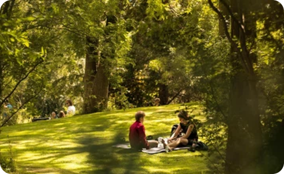
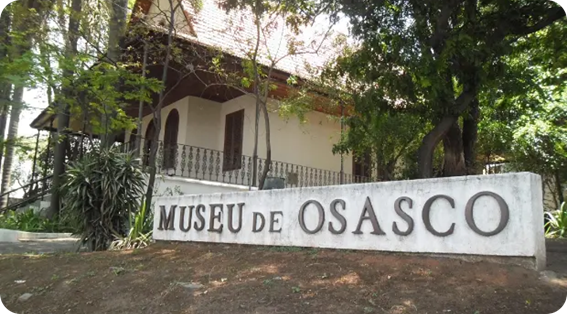

O que fazer em Osasco: Lugares mais legais para visitar?
Se você pretende morar em uma cidade com quase 700 mil habitantes, precisa conhecer os lugares mais legais que todo morador e/ou turista não pode deixar de visitar. Osasco é, segundo dados de 2019 do IBGE (Instituto Brasileiro de Geografia e Estatística), a 8ª cidade mais populosa do estado de São Paulo e, com isso, possui inúmeras regiões fascinantes que você não pode deixar de visitar. Assim, chegou a hora de descobrir o que fazer no município. Vale muito a pena visitar Osasco. A região, além de contar com os melhores restaurantes, escolas, faculdades e bares, contém excelentes atrativos. Que tal conhecer diferentes atividades para fazer na cidade?
Pet Parque Municipal de Osasco
O Pet Parque Municipal de Osasco foi o primeiro parque da cidade destinado aos animais domésticos. O local possui uma ampla área verde e inclui aparelhos de exercícios, porta-saco de lixo para recolher os dejetos e bebedouro planejado para os pets.
Borboletário Muniicpal de São Paulo
O Borboletário Municipal de Osasco está incorporado ao Parque Ana Luiza Moura de Freitas e possui vínculo com a Sema (Secretaria de Meio Ambiente de Osasco). O lugar proporciona ao público a oportunidade de estudar os períodos e os costumes das borboletas.
Museu Dimitri Sensaud de Lavaud
O Museu Dimitri Sensaud de Lavaud, também conhecido como Museu de Osasco, é uma excelente opção para moradores e turistas que não abrem mão de um passeio cultural, já que os acervos documentais e fotográficos relatam parte da história e da cultura do município. O lugar foi construído por Antônio Agu, a partir da solicitação do banqueiro Giovanni Brícola. A arquitetura do museu possui uma feição que remete aos chalés europeus.